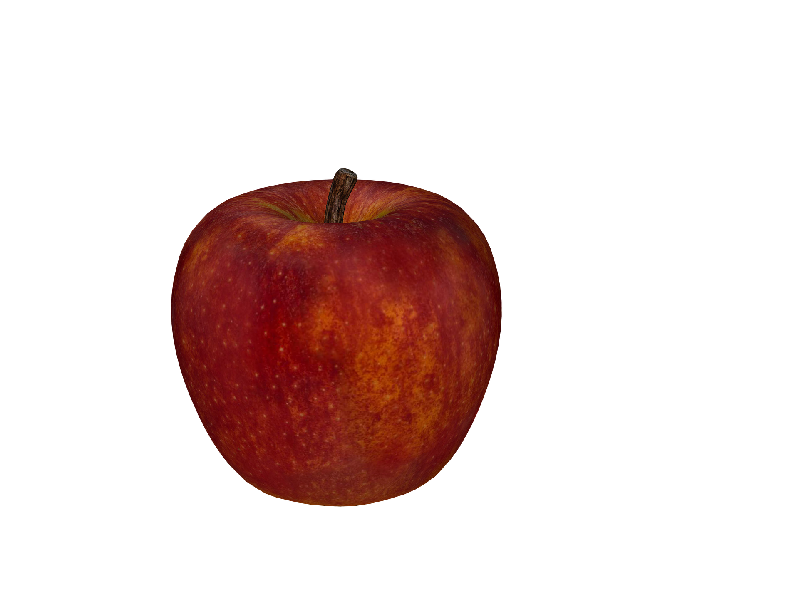

Position the screen at approximately 80cm away from you
Position a pen or pencil to be in your line of sight as you look at the centre of the screen
Now whenever you're ready, look from the picture on the screen to the tip of your pen and pencil and count slowly to 3. After you've done that look back to the picture. Try that again --look at the tip of a pencil or pen count to 3 --nice and slow, 1...2...3... and then look back again. Then try it again for the third time. If you are starting to notice that you getting a double image of the apple on the screen every time, that is great ! you should be able to do it at least three times counting to 3 each time, before you can move on to phase two. once you're ready click on here
